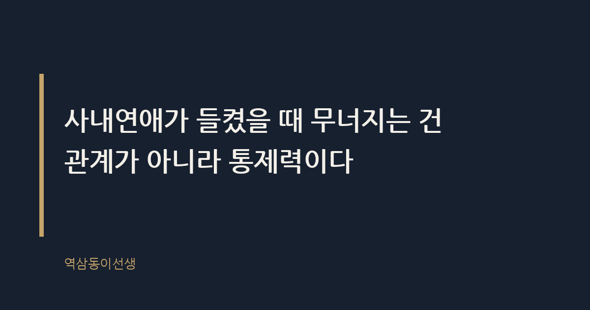
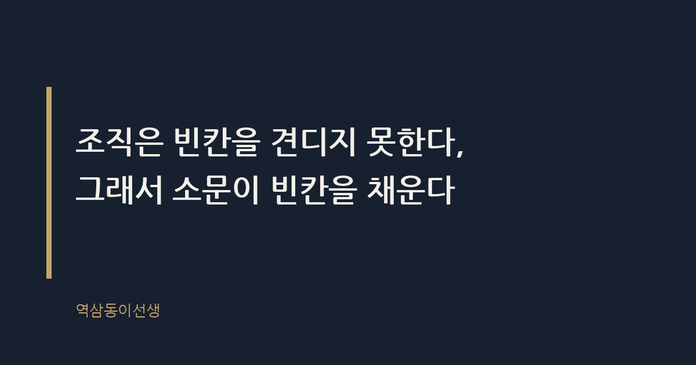

주제 사내 연애가 들켰을 때 생기는 일 (evergreen / office)
제목 후보
메타 설명 사내연애 들켰을 때 실제로 벌어지는 일과 인사 규정의 효력, 대처 순서까지 현장 경험으로 정리했다.
라벨 사내연애, 직장생활, 사내연애들켰을때, 회사생활팁, 직장내연애, 인사규정, 직장매너, 오피스라이프, 커리어관리, 직장인고민
실용 자산 체크리스트 — 들켰다는 사실을 바꿀 수 없는 상황에서 독자가 당장 순서대로 행동할 지침이 필요한 주제라 체크리스트가 적합하다
발행 전 팩트체크
이미지 (Blogger 편집기에 드래그해 넣으세요)
도입부 사진 · ⓒ PIRO4D / Pexels


예전 회사 엘리베이터에서 있었던 일이다. 두 사람이 각자 다른 층에서 타더니 서로 눈도 안 마주치고 휴대폰만 들여다봤다. 그런데 내릴 때 둘이 동시에 "수고하세요" 하고 똑같은 억양으로 인사를 했다. 그 순간 같이 타고 있던 팀장 셋이 서로 눈빛을 교환했다. 그날 오후 세 시, 탕비실에서는 이미 두 사람의 사내연애가 기정사실이 되어 있었다. 본인들만 모르고 있었다.
사내연애가 들켰을 때 생기는 일의 핵심은 연애 자체의 문제가 아니다. 본인이 언제, 누구에게, 어떤 방식으로 알릴지를 정할 권리를 잃어버린다는 것이다. 숨기는 동안은 두 사람이 정보의 주인이었다. 들키는 순간부터는 주인이 바뀐다. 소문을 만든 사람, 처음 목격한 사람, 그리고 그걸 퍼뜨린 사람이 이야기의 주도권을 쥔다.
이선생이 옆에서 지켜본 바로는, 들킨 직후 당사자들이 가장 크게 당황하는 지점이 바로 여기다. "우리 얘기가 왜 이렇게 디테일하게 퍼졌지?"라는 반응이 많다. 본인들은 일주일 전 회식 자리에서 손을 살짝 스친 것 정도만 기억하는데, 이미 사내에는 "둘이 주말마다 같은 카페에 간다"는 버전까지 돌고 있다. 이건 누가 거짓말을 해서가 아니라, 조직이 정보를 가공하는 속도가 당사자의 상상보다 훨씬 빠르기 때문이다.
실제로 이선생이 본 사례 중엔 사내연애 당사자가 "우리 이야기가 이렇게 퍼진 줄 몰랐다"며 인사팀에 직접 찾아온 경우도 있었다. 인사팀장은 특별한 조치 없이 "소문은 원래 그렇게 돈다. 본인들 태도만 잘 관리하면 된다"고 말했을 뿐인데, 그 말 한마디가 오히려 두 사람을 더 침착하게 만들었다. 통제할 수 없는 영역을 인정하는 순간, 역설적으로 평정심이 돌아온다.
사내연애란 같은 조직에 소속된 두 사람이 업무 외 시간에 연인 관계를 맺는 것을 말한다. 정의는 단순하지만 현실은 복잡하다. 같은 공간에서 하루 여덟 시간 이상 마주치는 두 사람이 평소와 다른 '티'를 완전히 지우기란 거의 불가능하다. 메신저 답장 속도, 회의 중 시선 처리, 점심 메뉴 선택 하나까지 동료들은 데이터로 쌓아둔다.
사내연애가 오래 숨겨지지 않는 이유는 조직 구성원들이 서로를 관찰하는 데 이미 능숙하기 때문이다. 같은 팀, 같은 층, 같은 엘리베이터를 매일 공유하는 사람들은 서로의 패턴을 외우고 있다. 패턴에서 벗어난 행동 하나가 생기면 바로 눈에 띈다. 평소 안 하던 택시 동승, 갑자기 같이 없어지는 흡연 타임, 회식 자리에서 어색하게 멀리 앉는 것까지 전부 신호가 된다.
첫 번째는 '소급 해석'이다. 지난 몇 개월간의 모든 행동이 연애의 증거로 재해석된다. 둘이 같은 프로젝트에 투입됐던 것, 야근을 자주 같이 했던 것, 심지어 의견 충돌이 잦았던 것까지 "티 안 내려고 일부러 싸운 척했다"는 식으로 다시 쓰인다. 사실 관계와 무관하게 서사가 먼저 완성된다.
두 번째는 '업무 의심'이다. 특히 둘 중 한 명이 다른 한 명의 평가나 승진에 영향을 줄 수 있는 위치라면 더 그렇다. "저번에 그 보고서 통과된 거, 설마"라는 말이 당사자가 듣기도 전에 퍼진다. 실제로 영향이 없었더라도 의심은 소문의 형태로 평판에 남는다.
세 번째는 '분리 조치'다. 인사팀이 개입하는 경우는 두 사람이 같은 부서에서 직접적인 보고라인에 있을 때다. 이때는 둘 중 한 사람을 다른 팀이나 다른 사무실로 전보하는 방식으로 정리하는 경우가 많다. 연애 자체를 문제 삼는 게 아니라 '이해상충'을 막는다는 명분이다.
가장 흔한 실수는 '부인'이다. 이미 소문이 상당히 퍼진 상태에서 "아니다, 그런 사이 아니다"라고 잡아떼면, 나중에 사실이 드러났을 때 신뢰가 두 배로 깎인다. 연애 자체보다 거짓말이 문제가 되는 순간이다.
두 번째 실수는 '과잉 설명'이다. 묻지도 않았는데 "우리는 언제부터 만났고, 왜 숨겼고"까지 구구절절 설명하는 경우다. 동료들은 그 디테일을 또 다른 버전으로 재가공해서 퍼뜨린다. 짧고 담백한 대답이 소문의 확산 속도를 가장 효과적으로 줄인다.
세 번째 실수는 '동료 포섭'이다. 친한 동료 한두 명에게 미리 알리고 입단속을 부탁하는 경우인데, 이건 오히려 비밀을 아는 사람의 숫자만 늘리는 결과를 낳는다. 비밀은 아는 사람이 셋을 넘는 순간부터 비밀이 아니다.
사내연애 금지 조항이란 회사가 취업규칙이나 사내 규정에 "직원 간 연애를 금지한다"고 명시한 조항을 말한다. 이 조항 자체만으로는 직원을 해고하거나 징계하기 어렵다고 알려져 있다. 연애는 개인의 사생활 영역에 속하고, 업무 수행에 직접적인 지장을 주지 않는 이상 이를 이유로 한 불이익 처분은 과도한 개입으로 판단될 여지가 크기 때문이다.
다만 예외는 있다. 두 사람 중 한 명이 다른 한 명의 직속 상사이거나 인사·평가 권한을 가진 경우, 회사는 '공정한 평가 시스템 유지'를 이유로 보고라인 조정이나 부서 재배치를 요구할 수 있다. 이건 연애를 처벌하는 게 아니라 이해상충을 관리하는 조치로 본다. 사내연애가 들켰을 때 인사팀이 가장 먼저 확인하는 것도 바로 이 보고라인 문제다.
조직은 빈칸을 견디지 못한다. 누군가의 행동에 설명되지 않는 부분이 생기면, 조직 구성원들은 본능적으로 그 빈칸을 채우려 든다. 사내연애가 들켰을 때 소문이 과장되는 이유는 거짓말을 즐겨서가 아니라, 불확실한 정보를 각자의 상상으로 메우기 때문이다. 르네상스 시대 피렌체의 궁정에서도 똑같은 일이 있었다. 메디치가의 결혼 동맹 소문은 사실보다 늘 먼저, 그리고 더 극적으로 퍼졌다. 정보가 부족할수록 이야기는 화려해진다.
또 하나, 사내연애는 조직 내에서 보기 드문 '사적인 서사'다. 매일 보고서와 숫자로 대화하던 사람들에게 로맨스는 단비 같은 소재다. 업무 스트레스가 높은 조직일수록 이 서사는 더 빨리, 더 많이 소비된다. 씁쓸하지만 사람들은 남의 연애를 자기 일처럼 중계하는 데서 묘한 해방감을 느낀다.
연애 중에는 동료들의 시선이 불편한 정도지만, 이별 후가 진짜 고비다. 매일 같은 공간에서 마주쳐야 하는데 한쪽은 아무렇지 않은 척, 다른 한쪽은 얼굴만 봐도 괴로운 상태가 몇 달씩 이어지는 경우를 여럿 봤다. 회의 자리 배치, 점심 메뉴, 심지어 메신저 단체방 이모티콘 하나까지 눈치를 보게 된다.
이선생이 지켜본 가장 깔끔했던 이별 후 처신은, 두 사람 중 한 명이 먼저 "우리 이제 그냥 동료로 지내자"는 말을 공개적으로, 아주 담백하게 건넨 경우였다. 이 말 한마디가 주변 사람들의 눈치 게임을 끝내줬다. 반대로 가장 오래 뒷말이 돌았던 경우는, 둘 다 아무 말 없이 서먹하게 지내다가 한쪽이 갑자기 부서를 옮긴 케이스였다. 사람들은 설명되지 않은 침묵을 가장 오래 기억한다.
사내연애가 들켰을 때 사람들이 가장 크게 오해하는 지점은, 연애 사실 자체가 문제라고 생각하는 것이다. 실제로 조직에 남는 흔적은 연애의 지속 여부가 아니라 그 과정에서 보인 태도다. 당황해서 거짓말을 한 사람, 동료에게 숨기려고 다른 사람을 끌어들인 사람, 보고라인 문제를 알고도 방치한 사람. 이런 디테일이 몇 년 뒤 승진 심사 자리에서 "그때 그 일" 이라는 이름으로 다시 등장한다. 씁쓸하면서도 묘하게 정확한 구조다.
사내연애 자체는 숨길 일도, 자랑할 일도 아니다. 다만 들켰을 때 보이는 대응 방식 하나가 오래도록 평판으로 남는다는 것만은 분명하다.
Q. 사내연애, 본인이 먼저 밝힌 적 있으신가요, 아니면 소문으로 먼저 들킨 적 있으신가요?